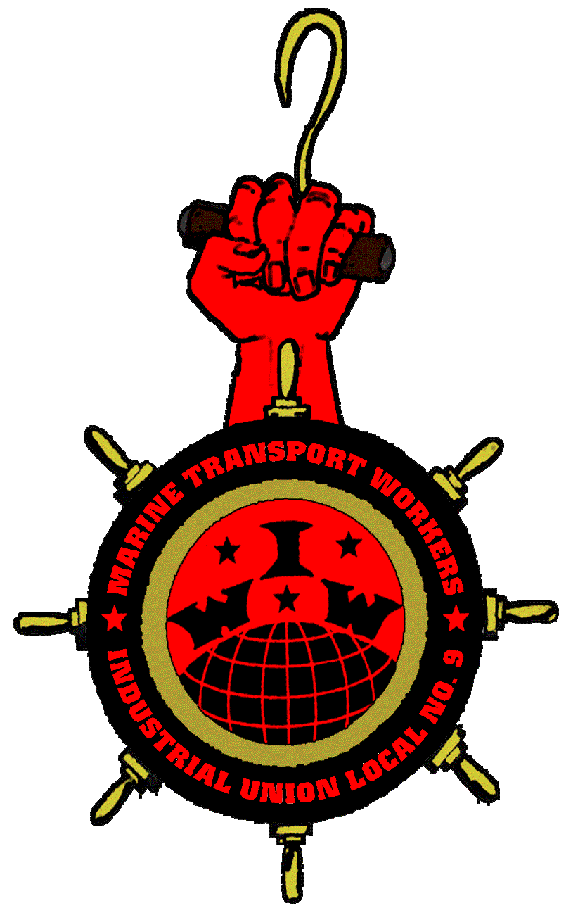

IWW and radical influences on the San Francisco waterfront
Submitted on Mon, 06/26/2017 - 7:27pm
By Hieronymous - Libcom.org, May 3, 2017
For May Day 2017 Local 10 of the International Longshore and Warehouse Union invoked a contractual "stop-work" privilege and refused to work any Bay Area docks in celebration of International Workers Day for the third consecutive year. This speech, originally delivered at the 75th Anniversary of the 1934 San Francisco General Strike at the Marine Firemen’s Hall in San Francisco, was adapted for the rally preceding the May Day march on May 1, 2017.
John Ross wrote:
In my own country
amnesia is the norm,
the schools teach us
to unremember from birth,
the slave taking, the risings up,
the songs of resistance,
the first May first,
our martyrs from Haymarket
to Attica to the redwoods of California
ripped whole from our hearts,
erased from official memory . . .
(from "Against Amnesia)
In the 1950s, when he was a North Beach resident, poet Allen Ginsberg shipped out various times with the merchant marines from the Embarcadero. Earlier, the proximity of the waterfront to the vibrant intellectual life of the bohemians and political radicals of North Beach made San Francisco the most radical port city in the U.S. But Ginsberg lived in North Beach during the height of the Cold War, so perhaps it should be expected that his poem “America” has the line:
Allen Ginsberg wrote:
“America I feel sentimental about the Wobblies”
Poet Kenneth Rexroth, who was close to the circle of anarchists and anti-World War II pacifists who founded KPFA in 1949, and earlier had been a soapboxer and wrote for the Waterfront Worker, said this about the pre-World War II period:
Kenneth Rexroth wrote:
. . . people became involved in red San Francisco. The interesting thing is that most of them became practical labor organizers, rather than Bohemians sitting around Union Square arguing about proletarian literature . . . You see, all of us were very actively involved and this makes all the difference in the world. Another thing, very few of these people were orthodox Commies because the basic tradition on the West Coast was IWW.
From the California Gold Rush onwards, a worker on the West Coast could easily go out and get a job in the woods or at sea or in the fields.
The basic program of the IWW is agitate, educate, organize; since so many Wobblies lived nomadic lives onboard ships, as “timberbeasts” in the woods, or seasonally chased harvests as migratory agricultural workers, they were not only able to circulate IWW literature, but in the communal living quarters were able to discuss a variety of topics, as well as serve as “walking encyclopedias” of comparative knowledge on prevailing wage rates, working conditions and organizing strategies. A 1913 survey of workers in California showed the casualized nature of labor, as the average employment was 15-30 days in lumber camps, 30 days for the seasonal canning industry , and 60 days for mining – the latter being a stronghold of the IWW.
The IWW was the most radical indigenous form of revolutionary unionism in the U.S. It left an inspiring legacy – especially for workers’ struggles today – because it was comprised largely of immigrants. This meant that means of struggle used by native-born and non-white American men, such as electoral strategies and party building, didn’t apply since these immigrants didn’t have the right to vote. But even if they were citizens, the mobility of transient workers made it impossible for them to establish residency so that they could even register. Additionally, workers of different ethnicities required special attention to their various tongues. In the 1913 Wheatland Riot, at the Durst Ranch near Marysville, CA, over two dozen languages were spoken by the 2,800 people who showed up for 1,800 jobs picking hops. The IWW was open to all workers, regardless of craft, skill, race, ethnicity, country of origin, or gender. And during anti-Chinese agitation, it was one of the only working class organizations to actively attempt to organize Asian workers.
Here’s what Italian theorist Sergio Bologna said about the significance of the Wobblies:
Sergio Bologna wrote:
The IWW succeeded in creating an absolutely original type of agitator: not the mole digging for decades within the single factory or proletarian neighborhood, but the type of agitator who swims within the stream of proletarian struggles, who moves from one end to the other of the enormous American continent and who rides the seismic wave of the struggle, overcoming national boundaries and sailing the oceans before organizing conventions to found sister organizations. The Wobblies’ concern with transportation workers and longshoremen, their constant determination to strike at capital as an international market, their intuitive understanding of the mobile proletariat – employed today, unemployed tomorrow – as a virus of social insubordination, as the agent of the “social wildcat”: all these things make the IWW a class organization which anticipated present-day forms of struggle.
Perhaps their greatest strength was their advocacy of industrial unionism and organizing with the goal of class consciousness and the creation of a classless society. In this sense the IWW’s origins can be traced to its predecessors like the Knights of Labor, with their appeal to solidarity and their motto: “An Injury to One is the Concern of All.” They organized around mixed local assemblies of workers of all trades and rejected the narrowness of craft-based unions. But they also allowed employers to join, accepted racism against the Chinese by supporting the Exclusion Act of 1882, and their leader Terence Powderly erred on the side of caution in calling off strikes.
During the agitation for the 8-hour day in the mid-1880s, a more consistent model for the IWW can be found in the “Chicago Idea” of the anarchists who advocated militant class-based workers’ organizations to be the “embryonic” forerunners of a future “free society.” The attempted general strike in Chicago in 1886 grew violent, police killed workers at the McCormick Reaper Works, and at the end of the protest rally the Haymarket Square the following day, a bomb was thrown and in the ensuing gunfire, 8 police were killed. Closely followed by working class militants around the world, the sham trial lead to the conviction and death sentences for 7 of the 8 defendants. Four were hung, another apparently committed suicide in jail, and two were eventually pardoned. It devastated the working class movement in the U.S. and showed the brutal lengths the state would go to in their attempt to silence militant workers.
Due to the distance and the remoteness – least until the transcontinental railroad in 1869 – class relations in San Francisco developed much differently. After the discovery of gold in California in 1848, San Francisco became an instant city and attracted adventurers from around the world. What took decades to develop elsewhere happened in a matter of weeks in California. It was the first major seaport in the world to be thoroughly organized and the first permanent sailor’s union was formed. The first sailors’ strike was in 1850 and by 1853 workers began to organize unions onshore. San Francisco became the labor capital of the west and many organizing drives were started and funded from here. But the class struggle in California was at times extremely violent. It was as though “labor was pitted against all of capital” and the battles became class-against-class, forcing both sides to come together in unity and solidarity. The first attempt to unite all waterfront unions occurred in 1886. Before the completion of the transcontinental railroad in 1869, it was impossible to recruit scabs to break strikes because of the distance to other population centers. It was also impossible to flood the labor market with possible strikebreakers. It took weeks to bring in replacement workers. As Carey McWilliams pointed out “When bakers of the city struck in 1863, the employers had to send to Hamburg [Germany] for strikebreakers and by the time they arrived the strike had been settled.”
The volatility of the struggles forced both workers and bosses into combinations to attempt to strengthen their control of the labor market, especially after the completion of the railroad allowing cheaper Eastern goods to flood in and undermine the California market. Chinese workers were used to cut the cost of labor. White workers, sadly, united around racism against the Chinese. In 1867, at least 400 White workers attacked Chinese workers building the San Francisco street railway and burned down their shanties. Never again were Chinese laborers employed en masse in the building trades. The pogroms against the Chinese reached a fever of intensity in incidents like the 1871 massacre in Los Angeles, when nearly 20 people were lynched. The boycott of Chinese-made cigars, based on the union labels of White workers, was the first extensive use of this tactic in the U.S.
1886 marked the first San Francisco waterfront workers’ strike, in addition to a brewery workers’ strike. Both strikes involved groups of workers vs. groups of employers. In 1891 the Coast Seaman’s Union was formed here too, the first of its type in the world, which stretched along the entire Pacific Coast; the union card was recognized in all ports. Employers formed an all-inclusive group called the Board of Manufacturers in 1891
1893 was the 2nd waterfront strike, which was lost because a bomb was set off on Christmas in front of a non-union boarding house, killing 10. It weakened union strength and was a victory for the bosses. In 1896 the fortunes of San Francisco were improved by the flow of gold returning to the city from the Klondike Gold Rush in Canada and economic activity in support of the Spanish-American War.
A milestone event was the formation in 1901 of the City Front Federation that included 13,000 waterfront workers from the Sailors Union of the Pacific, the Teamsters, and the various longshore unions. The bosses responded with the Employers Council. The 1901 Waterfront Strike erupted with a lock-out of the Teamsters and grew into a tangle of sympathy strikes that crippled the harbor for 3 months. It grew violent and 5 were killed and 300 assaults were reported. It ended in a negotiated settlement by the orders of Governor Gate. It resulted in the maintenance of the status quo, but was a victory for labor because it came out of the strike stronger than it started. By this time San Francisco “was recognized as not only the most tightly organized city in America but as the stronghold of trade unionism in the U.S.”
California sent just one delegate to the founding convention of the IWW in Chicago in 1905. By 1910 the “outlaw” revolutionary union had just 11 locals in California, with only 1,000 members. Frank Little led the 1910-1911 Free Speech Fight in Fresno; it was won after 6 months of mass jailings, becoming a vindication of free speech. In Los Angeles, labor was set back for at least 2 decades when the McNamara brothers confessed to bombing the LA Times building, killing 21. The IWW openly opposed the “yellow peril” agitation and tried to organize Mexican agricultural workers and those from other immigrant groups. The 1912 San Diego Free Speech Fight drew over 5,000 Wobblies, resulted in 2 IWW deaths and countless brutal beatings, but the intervention of Governor Johnson’s investigators upheld the right to free speech. With the disastrous 1913 Wheatland Riot, this period of IWW organizing was brought to a climax.
The 1916 San Francisco Longshore Strike succeeded in tying up $2.5 million in exports. A longshoreman was murdered, which tipped popular opinion in the strikers’ favor. But the Preparedness Day Bombing, which killed 10 and seriously injured 40, quickly ended support for the strike. In reaction, city voters passed an anti-picketing ordinance. Worse still, Tom Mooney was framed for the bombing and served 22 years in prison before being pardoned. In many ways it was San Francisco’s Haymarket, but Mooney’s eventual release is a testament to the strength of the local working class and the international campaign for his freedom.
With World War I, the IWW came under devastating attacks. Frank Little was lynched in August 1917 in Butte, Montana. In September 1917, the U.S. government raided 48 union halls and arrested 165 Wobblies for their anti-war positions. Then 101 were brought to trial and all were convicted, receiving sentences of up to 20 years in prison.
Greatly influenced by the IWW’s general strike tactic, the working class of Seattle ran the city for 5 days in 1919, not unlike the self-organization of the 1871 Paris Commune. Many of strike organizers were Wobblies. A group that broke away from the Wobblies, One Big Union, was influential in the Winnipeg General Strike in Canada three months later. That strike lasted six weeks. Because of migrant maritime workers and longshoremen up and down the West Coast of North America, there was much cross-fertilization between these events.
In April 1919 California adopted the Criminal Syndicalism Law aiming to crush the IWW. Initially, 504 people were arrested, of those 164 were convicted and 128 were sent to San Quentin for terms of 1 to 14 years. In 1920 the Palmer Raids targeted immigrant Wobblies for deportation. By the split between the Western and Eastern factions of the union in 1924, membership had declined and the IWW was a mere shell of what it once had been. But events like the mass strikes in 1919 had struck terror into the heart of bosses, whose nationwide reaction afterward resulted in mass arrests, deportations, and brutal attacks on working class radicals. The martyrdom of Italian immigrant anarchists Sacco and Vanzetti – who were arrested in 1920 and executed in 1927 – exemplified this.
George Rawick, in his essay “Working Class Self-Activity,” defines this period of pacification of class struggle:
George Rawick wrote:
The relative increase in the standard of living in the 1920s was most significant for American workers, most of whom were foreign-born or in contact with relatives in Europe, or were from poor American rural backgrounds. Under such conditions most workers who experienced an increase in the standard of living were unwilling, under conditions in which they could not see their way clear to the creation of new forms of organization, to engage in militant action. Thus in heavily capitalized and rationalized industry, the decade was one of relative peace. There should be nothing surprising about this calm, however. The problems posed by mass production and the assembly line required some time and pressure before workers could fight back again.
In 1922 chambers of commerce and manufacturers’ associations launched their “American Plan,” an open-shop drive to abolish unions and a red-scare to destroy radical organizations. This campaign to create “100% Americanism” was helped by the racist reactionaries in the American Legion, the National Security League, and the Ku Klux Klan. In response Marcus Garvey created the Universal Negro Improvement Association, claiming four million members in 1920. Black workers organized their first national mass union with the Brotherhood of Sleeping Car Porters in 1925 and its leaders went on to play important roles in later civil rights struggles. The 1920s ended with the economic crisis in 1929 that threw the U.S. and the world into the Great Depression.
The next surge of organizing began soon after the 1929 crash and well before FDR’s New Deal. There are several excellent published accounts of the San Francisco General Strike and the other two general strikes in 1934, in Toledo and Minneapolis. The victory of the strike in San Francisco launched another form of class-based unity across sectors, the Maritime Federation of the Pacific. Here again we see an attempt at IWW-style industrial unionism. Management never relented in the class war and to protect the gains of the General Strike, ILWU launched 1,399 -- legal and illegal -- strikes between 1936 and 1948.
We saw it again, in a more spontaneous form, in the 2006 May Day marches of immigrants against the Sensenbrenner Bill (HR 4437) that would have allowed the most draconian laws criminalizing and demonizing undocumented workers and anyone offering them assistance or solidarity. Although just a 1-day strike, it forced Congress to back down on the law. It had come full circle from Haymarket and how it is memorialized as May Day around the world (except in the U.S.). Even the Financial Times in Britain relayed the effectiveness of the action when on May 2, 2006 its front page carried a story about how the combined Los Angeles/Long Beach Port complex was closed by 90%, effectively shutting down the busiest container port in the Western Hemisphere.
The IWW Preamble says that a working class organization must be:
IWW Preamble wrote:
“ . . . formed in such a way that all its members in any one industry, or all industries if necessary, cease work whenever a strike or lockout is on in any department thereof, thus making an injury to one an injury to all.”
Hieronymous
San Francisco, California
May 1, 2017
Disclaimer: The views expressed here are not the official position of the IWW and do not necessarily represent the views of anyone but the author’s.